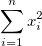
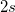
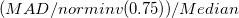
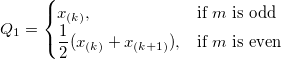
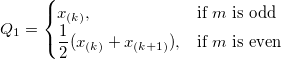

行の統計ダイアログボックス
DescStatsRow-Dialog
サポート情報
入力
値
モーメント
 を i 番目の標本および
を i 番目の標本および  を 番目の重みにします。
を 番目の重みにします。
| N 合計
|
Nで表されるデータポイントの総数
|
| N 欠損
|
欠損値の数
|
| 平均
|
平均値
 です。 です。
|
| 標準偏差
|
ここで、 です。 です。
Note: OriginProでは、 には他のオプションがあり、モーメントの分散除数項目で定義されます。 には他のオプションがあり、モーメントの分散除数項目で定義されます。
|
| 標準誤差
|
平均の標準誤差です。
|
| 平均の下側95%CI
|
平均の95%信頼区間の下側限界
ここで、}") は、ｎ-1 の自由度を持つスチューデントt -統計の は、ｎ-1 の自由度を持つスチューデントt -統計の  棄却値です。 棄却値です。
|
| 平均の上側95%CI
|
平均の95%信頼区間の上側限界
}\frac{s}{\sqrt{n}}")
ここで、 は、自由度n-1のスチューデントt -統計の 棄却値です。
|
| 分散
|

|
| 合計
|
 です。 です。
|
| 歪度
|
歪度は、分布の非対称性の度合いを計算します。これは次式で定義されます
(n-2)}\sum_{i=1}^n (\frac{x_i-\bar{x}}s)^3 ,\mbox{for DF}")
^3,\mbox{for WVR}")
|
| 尖度
|
尖度は、分布のとがり具合を表します。
}{(n-1)(n-2)(n-3)}\sum_{i=1}^n (\frac{x_i-\bar{x}}s)^4-\frac{3(n-1)^2}{(n-2)(n-3)},\mbox{for DF}")
|
| 未修正平方和
|

|
| 修正平方和
|
^2")
|
| 変動係数
|

|
| 平均の絶対偏差
|
|
| SDの2倍
|
標準偏差の2倍です。

|
| SDの3倍
|
標準偏差の3倍です。

|
| 幾何平均
|
 ^{\frac 1n}")
|
| 幾何SD
|
幾何学標準偏差
}") ここで、std は、重み付けされていない標準偏差です。
ここで、std は、重み付けされていない標準偏差です。
Note: 幾何標準偏差では重みは無視されます。
|
| モード
|
モード（最頻値）は、データ範囲で最も頻繁に表示される要素です。複数のモードが見つかったら、最も小さい値が選ばれます。
|
| 調和平均
|
調和平均です。
重みなし: ^{-1}}n\right)^{-1}")
重み付き:
任意のまたは重みが負の場合、欠損値を返し、任意のまたは重みが0の場合は0を返します。
|
分位数
分位数 は、与えられたデータセット内のデータポイントの指定された比率以下のデータからの値です。たとえば、任意のデータセットのデータポイントの25％が最初の四分位数より下にあり、データポイントの50％が2番目の四分位数または中央値より下にあります。
入力データセットを昇順で並べ替えます。}\,\!") を、並べ替えられたデータセットのi番目の要素とします
を、並べ替えられたデータセットのi番目の要素とします
| 最小
|
|
| 最小値のインデックス
|
元の入力データセットの最小値のインデックス番号
|
| 第一四分位(Q1)
|
第1 (25%) 四分位、 Q1です。計算手法については、四分位の補間をご覧下さい。
|
| 中央値
|
メディアンまたは第2 (50%)四分位、Q2です。計算手法については、四分位の補間をご覧下さい。
|
| 第3四分位(Q3)
|
第3 (75%) 四分位、 Q3です。計算手法については、四分位の補間をご覧下さい。
|
| 最大
|
}\,\!")
|
| Index of Maximum
|
元の入力データセットの最大値のインデックス番号
|
| 四分位範囲 (Q3-Q1)
|

|
| 範囲 (最大-最小)
|
最大値 - 最小値
|
| カスタムパーセンタイル
|
カスタムパーセンタイルを計算するか選択します。
|
| パーセンタイルリスト
|
このオプションは、カスタムパーセンタイルにチェックが付いている場合にのみ利用できます。パーセンタイルはリスト表示されたすべての値に対して計算されます。
|
| 中央値の絶対偏差(MAD)
|
単変量データセットX1、X2、...、Xnの場合、MADはデータの中央値からの絶対偏差の中央値として定義されます。
|)\,")
つまり、データの中央値からの残差(偏差)で始まる場合、MADは絶対値の中央値です。
|
| ロバスト変動係数
|

|
計算制御
モーメントの分散除数
- 分散序数d の計算の設定をします。
| DF
|
自由度

|
| N
|
非欠損の観測値の数

|
分位数の補間
- このオプションは、Q1、Q2、およびQ3の算出方法を決定します。
- i 番目のパーセンタイル(分位)をy とし、
 を設定します。そして、次のように定義します。
を設定します。そして、次のように定義します。
p=j+g, & \mbox{for Weighted Average Right}\\
np=j+g, & \mbox{for other methods}
\end{cases}")
- ここで、 j は、np, の整数部で、 g は、np の分数部であり、それぞれ異なる方法は
 番目のパーセンタイル、 yを次に述べる方法で定義します。
番目のパーセンタイル、 yを次に述べる方法で定義します。
| 平均化による経験分布
|
}+x_{(j+1)}), & \mbox{if }g=0\\
x_{(j+1)}, & \mbox{if }g>0
\end{cases}")
|
| 最近傍
|
np に最も近い番号の観測値
}, & \mbox{if }g\ne \frac{1}{2}\\
x_{(j)}, & \mbox{if }g=\frac{1}{2} \mbox{ and } j\mbox{ is even} \\
x_{(j+1)}, & \mbox{if }g=\frac{1}{2} \mbox{ and } j\mbox{ is odd}
\end{cases}")
ここで k は、 の整数部です の整数部です
|
| 経験分布
|
|
| 加重平均(右)
|
+p)}\,\!") に向けた加重平均 に向けた加重平均
x_{(j)}+gx_{(j+1)}\,\!")
ここで }\,\!") は、の値を取ります。 は、の値を取ります。
|
| 加重平均(左)
|
次の数に向けた加重平均:}\,\!")
ここで }") は、の値を取ります。 は、の値を取ります。
|
| Tukeyヒンジ
|
以下のようにする。

すると、次の値を得ることができます。
}\,\!") 

},& \mbox{if }n\mbox{ is odd}\\
\frac{1}{2}(x_{(m)}+x_{(m+1)}), & \mbox{if }m\mbox{ is even}
\end{cases}")
},& \mbox{if }n\mbox{ is odd}\\
\frac{1}{2}(x_{(n-k)}+x_{(mn-k+1)}), & \mbox{if }m\mbox{ is even}
\end{cases}")
}\,\!")
Note: この方法が選択される場合、四分位だけが計算されます。カスタムパーセンタイルは無効です。
|
出力
| レポート表
|
レポートワークシート表の詳細を指定します。
- ブック
- 目的のワークブックを指定します。
- <なし>: レポートワークシートテーブルを出力しません。
- ブック名
- ワークブックの名前を入力します。
- シート
- 目的のワークシート
- シート名
- 目的のワークシート名
- 列
- <新規> 追加の列への出力
- <ソースの次> 追加または挿入された列への出力
- 結果ログ
- 結果ログに結果を出力します。
- スクリプトウィンドウ
- スクリプトウィンドウに結果を出力します。
- ノートウィンドウ
- ノートウィンドウにレポートを出力するかどうかを指定します。
- <新規>: 新しいノートウィンドウに出力します。ノートウィンドウの名前を指定します。
|
 の、上へ移動
の、上へ移動 、下へ移動
、下へ移動 、削除
、削除 、すべて選択
、すべて選択 、選択
、選択 ボタンでグループ行の追加や削除、順序変更が可能です。
ボタンでグループ行の追加や削除、順序変更が可能です。